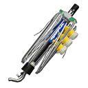

Undercover Brella
Undercover Brella
| Name | Description | Value | Min | Max |
|---|---|---|---|---|
| CanopyAirResist | Air Resistance(On the ground) | 0.05 | 0 | 1 |
| CanopyAirResistAir | Air Resistance(Mid-air) | 0.01 | 0 | 1 |
| CanopyAttackedDamageRate | Rate of Damage received after firing | 0.5 | 0 | 4 |
| CanopyBaseAirSpeedXZ | Basic Movement XZ Speed(Mid-air) | 1.32 | 0 | 30 |
| CanopyBaseSpeed | Basic Movement Speed(On the ground) | 1.32 | 0 | 30 |
| CanopyBaseSpeedComeOverRate | Rate of speed limitation once basic movement speed is surpassed (Add this value to the difference) | 0.92 | 0 | 1 |
| CanopyChargeFrame | Charge frames required to open the umbrella | 10 | 0 | 300 |
| CanopyColRadius | Hit Colision Radius | 5.0 | 0.1f | 10 |
| CanopyCureHPPerFrame | Damage restoration per frame when closing | 5 | 0 | 300 |
| CanopyCureWaitFrame | Frame with recovery on close | 0 | 0 | 300 |
| CanopyDamage | Damage when value is hit | 150 | 0 | 3000 |
| CanopyDegree | Angle from the side part | 10.0 | 0 | 20 |
| CanopyDestroyWaitFrame | Destroy Standby Frame | 15 | 0 | 120 |
| CanopyDirXZ_DiffDeg_H | ：Ｈ | 50.0 | 0 | 360 |
| CanopyDirXZ_DiffDeg_L | ＸＺAngle：Ｌ | 30.0 | 0 | 360 |
| CanopyDirXZ_OpenBias | Opening Bias | 0.925 | 0 | 1 |
| CanopyDirXZ_RotDegBias | ＸＺAngle Speed Bias | 0.5 | 0 | 1 |
| CanopyDirXZ_RotDeg_H | ：Ｈ | 20.0 | 0 | 360 |
| CanopyDirXZ_RotDeg_L | ＸＺAngle Speed：Ｌ | 15.0 | 0 | 360 |
| CanopyFrame | Frames of persistence | 100 | 10 | 3600 |
| CanopyGravity | Gravity | 0.03 | 0 | 1 |
| CanopyHP | [#]Health Points | 2000 | 1 | 5000 |
| CanopyHeight | Height of long part and diameter of side part | 18.0 | 0 | 50 |
| CanopyHitOtherCanopyDamage | When the strength is too weak, apply this damage to the other umbrella | 2000 | 0 | 30000 |
| CanopyHitOtherCanopyVolume | Umbrella strength(If the weak one is the same, it is destroyed) | 3 | 0 | 20 |
| CanopyHitShieldAttackDamage | Damage taken by the shield | 750 | 0 | 30000 |
| CanopyHitShieldReceiveDamage | Damage taken by the umbrella | 10000 | 0 | 30000 |
| CanopyHoldKnockBackCoreImpact | Strength(Before moving) | 2.4 | 0 | 20 |
| CanopyInitSpeed | Initial Speed | 1.32 | 0 | 30 |
| CanopyKeepSpeedFrame | Frame at which Initial Speed is Basic Movement Speed(On ground, Mid-air XZ) | 0 | 0 | 180 |
| CanopyModelInvisible | Hide Model | False | False | True |
| CanopyMoveKnockBackCoreImpact | Strength(While moving) | 2.4 | 0 | 20 |
| CanopyMoveKnockBackDegree | Angle with a straight line(While moving) | 60.0 | 0 | 90 |
| CanopyNaked | Always naked | False | False | True |
| CanopyNakedFrame | Frames required to open umbrella again | 270 | 1 | 1800 |
| CanopyOpenEndBias | Defensive wall generation offset bias | 0.7 | 0 | 1 |
| CanopyOpenEndOffset | Defensive wall generation End offset | 15.0 | -30 | 30 |
| CanopyOpenFrame | Frames between staring to open the umbrella and finish opening it | 10 | 0 | 300 |
| CanopyOpenStartOffset | Defensive Wall Generation Start Offset | 9.0 | -30 | 30 |
| CanopyPaintRadius | Paint radius | 10.0 | 0 | 50 |
| CanopyReboundBoundAddVel | Added acceleration towards the direction of where a wall leads after hitting it | 0.3 | 0 | 10 |
| CanopyReboundBoundRate | Rebound Rate on the direction a wall leads do when hitting it | 0.9 | 0 | 1 |
| CanopyReboundMinSpeed | Minimal Speed in the direction a wall leads when hitting it | 0.5 | 0 | 10 |
| CanopyReflectBoundAddVel | 0.0 | |||
| CanopyReflectBoundRate | 0.0 | |||
| CanopyShotFrame | Frames required to shoot(Even when not shooting, use this to calculate ink usage while the umbrella remains open) | 90 | 0 | 600 |
| CanopyShotOn | Shooting on | False | False | True |
| CanopySpeedAirAddScaleXZ | Movement Direction Vector XZ additional speed value(Mid-air) | 0.12 | 0 | 3 |
| CanopySpeedGroundAddScale | Movement Direction Vector Additional Speed Value(On ground) | 0.08 | 0 | 3 |
| CanopyTiltDegree | Tilting angle(Tilt towards the upper part is true) | 10.0 | 0 | 30 |
| CanopyWidth | Width of the long part | 8.0 | 0 | 50 |
| ColCenterRadius | Collision radius | 2.5 | 0 | 10 |
| ColDiffusionRadius | Collision radius | 1.6 | 0 | 10 |
| ContactDashPanelAddSpeed | 20.0 | |||
| ContactDashPanelCrossSaveSpeedRate | 1.0 | |||
| ContactJumpPanelAddSpeed | 0.0 | |||
| ContactJumpPanelAddSpeedOneBoundRate | 1.0 | |||
| ContactJumpPanelCrossSaveSpeedRate | 1.0 | |||
| ContactJumpPanelMaxNum | 2 | |||
| CoopCanopyDamage | 直にあたった時のダメージ | 400 | 0 | 3000 |
| CoopCanopyFrame | 存続フレーム | 100 | 10 | 3600 |
| CoopCanopyHP | 体力 | 2000 | 1 | 5000 |
| CoopDamageCenterMax | ダメージ最大量 | 300 | 0 | 2000 |
| CoopDamageCenterMin | ダメージ最小量 | 250 | 0 | 2000 |
| CoopDamageDiffusionMax | ダメージ最大量 | 300 | 0 | 2000 |
| CoopDamageDiffusionMin | ダメージ最小量 | 250 | 0 | 2000 |
| CoopDamageEffectiveDiffusionNum | ダメージ最大弾数 | 4 | 1 | 12 |
| CoopInkConsume | Ink consumption (Salmon Run) | 0.03 | 0 | 1 |
| CoopInkConsumeUmbrella | インク消費量 | 0.0 | 0 | 1 |
| CreateSplashLength | Splash movement distance | 35.0 | 0.1 | 160.0 |
| CreateSplashLengthFirstRandom | 最初の飛沫発生移動ランダム最大距離 | 0.0 | 0 | 160 |
| CreateSplashNum | しぶき発生数 | 4 | 0 | 16 |
| DamageCenterMax | [#]ダメージ最大量 | 100 | 0 | 2000 |
| DamageCenterMin | [#]ダメージ最小量 | 70 | 0 | 2000 |
| DamageDiffusionMax | [#]ダメージ最大量 | 100 | 0 | 2000 |
| DamageDiffusionMin | [#]ダメージ最小量 | 70 | 0 | 2000 |
| DamageEffectiveDiffusionNum | [#]ダメージ最大弾数 | 4 | 1 | 12 |
| DamageReduceEndFrame | Frame after shooting with minimum damage amount | 24 | 1 | 600 |
| DamageReduceStartFrame | Frame after launch (-1 is the same as guide cursor) | 8 | -1 | 60 |
| Diffusion0HorizontalDegree | 拡散弾初速角度横(0禁止 ただし縦も0なら可) | 4.0 | 0.0f | 45.0f |
| Diffusion0HorizontalOffset | 拡散弾発生位置オフセット横(0禁止 ただし縦も0なら可) | 1.2 | 0.0f | 20.0f |
| Diffusion0Num | 拡散弾個数 | 2 | 0 | 12 |
| Diffusion0VerticalDegree | 拡散弾初速角度縦(0禁止 ただし横も0なら可) | 2.7 | 0.0f | 45.0f |
| Diffusion0VerticalOffset | 拡散弾発生位置オフセット縦(0禁止 ただし横も0なら可) | 1.0 | 0.0f | 20.0f |
| Diffusion1AddDegree | 発射追加角度(時計回りが正) | 45.0 | -180.0f | 180.0f |
| Diffusion1HorizontalDegree | 拡散弾初速角度横(0禁止 ただし縦も0なら可) | 2.0 | 0.0f | 45.0f |
| Diffusion1HorizontalOffset | 拡散弾発生位置オフセット横(0禁止 ただし縦も0なら可) | 0.5 | 0.0f | 20.0f |
| Diffusion1Num | 拡散弾個数 | 4 | 0 | 12 |
| Diffusion1VerticalDegree | 拡散弾初速角度縦(0禁止 ただし横も0なら可) | 2.6 | 0.0f | 45.0f |
| Diffusion1VerticalOffset | 拡散弾発生位置オフセット縦(0禁止 ただし横も0なら可) | 0.5 | 0.0f | 20.0f |
| DiffusionInitVelRandom | 拡散弾初速差ランダム | 2.0 | 0 | 20 |
| DrawCenterRadius | 描画サイズ | 13.25 | 0 | 50 |
| DrawDiffusionRadius | 描画サイズ | 13.25 | 0 | 50 |
| FootSplashOffset | 発生位置 軸方向オフセット | 12.0 | 0 | 30 |
| FootSplashPaintRadius | 塗り半径 | 10.0 | 0 | 30 |
| FootSplashSpanFrame | 発生スパン(0ならOFF) | 0 | 0 | 120 |
| FootSplashWaitFrame | 最初の発生フレーム | 5 | 0 | 120 |
| GuideCheckCollisionFrame | Guide collision check frame (Guide cursor display frame when not hit) | 8 | 1 | 45 |
| InitVel | Initial Velocity Z (Unused for Splatlings) | 20.0 | 0 | 50 |
| InkConsume | Ink consumption (maximum charge for splatlings) | 0.04 | 0 | 1 |
| InkConsumeUmbrella | [#]インク消費量 | 0.0 | 0 | 1 |
| InkRecoverStop | Ink recovery restart frame | 40 | 0 | 240 |
| InkRecoverStopCanopy | インク回復再開フレーム（傘射出） | 120 | 0 | 240 |
| InkRecoverStopCharge | インク回復再開フレーム（チャージ） | 30 | 0 | 240 |
| JumpGndCharge | チャージ中ジャンプ値 | 0.8 | 0 | 1 |
| KnockBack | Knockback | 0.0 | 0 | 10 |
| MoveSpeed | Movement speed while charging | 0.72 | 0 | 4 |
| MoveSpeedCharge | チャージ中の移動速度 | 0.72 | 0 | 4 |
| PaintFarCenterDistance | 遠方塗り距離 | 200.0 | 0 | 1000 |
| PaintFarCenterRadius | 遠方塗り半径 | 19.0 | 0 | 36 |
| PaintFarDiffusionDistance | 遠方塗り距離 | 200.0 | 0 | 1000 |
| PaintFarDiffusionRadius | 遠方塗り半径 | 16.2 | 0 | 36 |
| PaintNearCenterDistance | 手前塗り距離 | 20.0 | 0 | 1000 |
| PaintNearCenterRadius | 手前塗り半径 | 19.0 | 0 | 36 |
| PaintNearDiffusionDistance | 手前塗り距離 | 20.0 | 0 | 1000 |
| PaintNearDiffusionRadius | 手前塗り半径 | 16.2 | 0 | 36 |
| PostDelayFrm_Main | 攻撃後：硬直Ｆ | 20 | 6 | 120 |
| PostDelayFrm_MoveLmt | 攻撃後：移動制限Ｆ | 20 | 6 | 120 |
| PostNoShotReqFrm | 攻撃後：ショット予約禁止Ｆ | 16 | 0 | 120 |
| PreDelayFrm_HumanMain | 攻撃前：遅延追加Ｆ(ヒト中) | 8 | 0 | 120 |
| PreDelayFrm_SquidMain | 攻撃前：遅延追加Ｆ(イカ中) | 15 | 0 | 120 |
| RepeatFrame | Synchronize frames (see "Charging" at Splatling page) | 26 | 1 | 90 |
| SplashColRadius | Splash collision radius | 1.5 | 0 | 10 |
| SplashDrawRadius | Splash drawing size | 3.0 | 0 | 10 |
| SplashPaintLength | 塗り縦長さ | 28.0 | 0 | 30 |
| SplashPaintWidthFullActive | 全弾生存しているときの塗り幅 | 13.3 | 0 | 30 |
| SplashPaintWidthOneActive | 一つだけ弾が生存しているときの塗り幅 | 5.0 | 0 | 30 |
| StraightFrame | Number of rectilinear frames of a bullet | 4 | 0 | 16 |
| StraightStateEndSpeed | Forced speed at end of straightforward frame (does no change when initial speed is smaller than this value) | 19.085 | 0 | 50 |
 Grizzco Umbrella
| Name | Description | Value | Min | Max |
|---|---|---|---|---|
| CanopyAirResist | Air Resistance(On the ground) | 0.01 | 0 | 1 |
| CanopyAirResistAir | Air Resistance(Mid-air) | 0.05 | 0 | 1 |
| CanopyAttackedDamageRate | Rate of Damage received after firing | 0.5 | 0 | 4 |
| CanopyBaseAirSpeedXZ | Basic Movement XZ Speed(Mid-air) | 4.0 | 0 | 30 |
| CanopyBaseSpeed | Basic Movement Speed(On the ground) | 2.8 | 0 | 30 |
| CanopyBaseSpeedComeOverRate | Rate of speed limitation once basic movement speed is surpassed (Add this value to the difference) | 0.92 | 0 | 1 |
| CanopyChargeFrame | Charge frames required to open the umbrella | 10 | 0 | 300 |
| CanopyColRadius | Hit Colision Radius | 5.0 | 0.1f | 10 |
| CanopyCureHPPerFrame | Damage restoration per frame when closing | 5 | 0 | 300 |
| CanopyCureWaitFrame | Frame with recovery on close | 0 | 0 | 300 |
| CanopyDamage | Damage when value is hit | 300 | 0 | 3000 |
| CanopyDegree | Angle from the side part | 10.0 | 0 | 20 |
| CanopyDestroyWaitFrame | Destroy Standby Frame | 15 | 0 | 120 |
| CanopyDirXZ_DiffDeg_H | ：Ｈ | 30.0 | 0 | 360 |
| CanopyDirXZ_DiffDeg_L | ＸＺAngle：Ｌ | 1.0 | 0 | 360 |
| CanopyDirXZ_OpenBias | Opening Bias | 0.925 | 0 | 1 |
| CanopyDirXZ_RotDegBias | ＸＺAngle Speed Bias | 0.5 | 0 | 1 |
| CanopyDirXZ_RotDeg_H | ：Ｈ | 30.0 | 0 | 360 |
| CanopyDirXZ_RotDeg_L | ＸＺAngle Speed：Ｌ | 10.0 | 0 | 360 |
| CanopyFrame | Frames of persistence | 10 | 10 | 3600 |
| CanopyGravity | Gravity | 0.16 | 0 | 1 |
| CanopyHP | [#]Health Points | 2000 | 1 | 5000 |
| CanopyHeight | Height of long part and diameter of side part | 25.0 | 0 | 50 |
| CanopyHitOtherCanopyDamage | When the strength is too weak, apply this damage to the other umbrella | 1000 | 0 | 30000 |
| CanopyHitOtherCanopyVolume | Umbrella strength(If the weak one is the same, it is destroyed) | 0 | 0 | 20 |
| CanopyHitShieldAttackDamage | Damage taken by the shield | 1000 | 0 | 30000 |
| CanopyHitShieldReceiveDamage | Damage taken by the umbrella | 10000 | 0 | 30000 |
| CanopyHoldKnockBackCoreImpact | Strength(Before moving) | 2.4 | 0 | 20 |
| CanopyInitSpeed | Initial Speed | 1.4 | 0 | 30 |
| CanopyKeepSpeedFrame | Frame at which Initial Speed is Basic Movement Speed(On ground, Mid-air XZ) | 0 | 0 | 180 |
| CanopyModelInvisible | Hide Model | False | False | True |
| CanopyMoveKnockBackCoreImpact | Strength(While moving) | 2.4 | 0 | 20 |
| CanopyMoveKnockBackDegree | Angle with a straight line(While moving) | 60.0 | 0 | 90 |
| CanopyNaked | Always naked | True | False | True |
| CanopyNakedFrame | Frames required to open umbrella again | 300 | 1 | 1800 |
| CanopyOpenEndBias | Defensive wall generation offset bias | 0.7 | 0 | 1 |
| CanopyOpenEndOffset | Defensive wall generation End offset | 15.0 | -30 | 30 |
| CanopyOpenFrame | Frames between staring to open the umbrella and finish opening it | 10 | 0 | 300 |
| CanopyOpenStartOffset | Defensive Wall Generation Start Offset | 9.0 | -30 | 30 |
| CanopyPaintRadius | Paint radius | 10.0 | 0 | 50 |
| CanopyReboundBoundAddVel | Added acceleration towards the direction of where a wall leads after hitting it | 0.0 | 0 | 10 |
| CanopyReboundBoundRate | Rebound Rate on the direction a wall leads do when hitting it | 0.0 | 0 | 1 |
| CanopyReboundMinSpeed | Minimal Speed in the direction a wall leads when hitting it | 0.6 | 0 | 10 |
| CanopyShotFrame | Frames required to shoot(Even when not shooting, use this to calculate ink usage while the umbrella remains open) | 1 | 0 | 600 |
| CanopyShotOn | Shooting on | False | False | True |
| CanopySpeedAirAddScaleXZ | Movement Direction Vector XZ additional speed value(Mid-air) | 0.12 | 0 | 3 |
| CanopySpeedGroundAddScale | Movement Direction Vector Additional Speed Value(On ground) | 0.12 | 0 | 3 |
| CanopyTiltDegree | Tilting angle(Tilt towards the upper part is true) | 10.0 | 0 | 30 |
| CanopyWidth | Width of the long part | 7.0 | 0 | 50 |
| ColCenterRadius | Collision radius | 2.0 | 0 | 10 |
| ColDiffusionRadius | Collision radius | 2.0 | 0 | 10 |
| ContactDashPanelAddSpeed | Additional Speed | 0.0 | 0 | 40 |
| ContactDashPanelCrossSaveSpeedRate | Rate of speed control on a straight direction | 1.0 | 0 | 1 |
| ContactJumpPanelAddSpeed | Additional Speed | 0.0 | 0 | 40 |
| ContactJumpPanelAddSpeedOneBoundRate | Rate of additional speed after every jump | 1.0 | 0 | 1 |
| ContactJumpPanelCrossSaveSpeedRate | Rate of speed control on a straight direction | 1.0 | 0 | 1 |
| ContactJumpPanelMaxNum | Maximum Jump Times | 2 | 0 | 10 |
| CoopCanopyDamage | 直にあたった時のダメージ | 300 | 0 | 3000 |
| CoopCanopyFrame | 存続フレーム | 10 | 10 | 3600 |
| CoopCanopyHP | 体力 | 2000 | 1 | 5000 |
| CoopDamageCenterMax | ダメージ最大量 | 150 | 0 | 2000 |
| CoopDamageCenterMin | ダメージ最小量 | 150 | 0 | 2000 |
| CoopDamageDiffusionMax | ダメージ最大量 | 150 | 0 | 2000 |
| CoopDamageDiffusionMin | ダメージ最小量 | 150 | 0 | 2000 |
| CoopDamageEffectiveDiffusionNum | ダメージ最大弾数 | 4 | 1 | 12 |
| CoopInkConsume | Ink consumption (Salmon Run) | 0.02 | 0 | 1 |
| CoopInkConsumeUmbrella | インク消費量 | 0.001 | 0 | 1 |
| CreateSplashLength | Splash movement distance | 45.0 | 0.1 | 160.0 |
| CreateSplashLengthFirstRandom | 最初の飛沫発生移動ランダム最大距離 | 45.0 | 0 | 160 |
| CreateSplashNum | しぶき発生数 | 3 | 0 | 16 |
| DamageCenterMax | [#]ダメージ最大量 | 200 | 0 | 2000 |
| DamageCenterMin | [#]ダメージ最小量 | 150 | 0 | 2000 |
| DamageDiffusionMax | [#]ダメージ最大量 | 200 | 0 | 2000 |
| DamageDiffusionMin | [#]ダメージ最小量 | 150 | 0 | 2000 |
| DamageEffectiveDiffusionNum | [#]ダメージ最大弾数 | 4 | 1 | 12 |
| DamageReduceEndFrame | Frame after shooting with minimum damage amount | 24 | 1 | 600 |
| DamageReduceStartFrame | Frame after launch (-1 is the same as guide cursor) | 8 | -1 | 60 |
| Diffusion0HorizontalDegree | 拡散弾初速角度横(0禁止 ただし縦も0なら可) | 5.0 | 0.0f | 45.0f |
| Diffusion0HorizontalOffset | 拡散弾発生位置オフセット横(0禁止 ただし縦も0なら可) | 0.5 | 0.0f | 20.0f |
| Diffusion0Num | 拡散弾個数 | 3 | 0 | 12 |
| Diffusion0VerticalDegree | 拡散弾初速角度縦(0禁止 ただし横も0なら可) | 5.0 | 0.0f | 45.0f |
| Diffusion0VerticalOffset | 拡散弾発生位置オフセット縦(0禁止 ただし横も0なら可) | 0.5 | 0.0f | 20.0f |
| Diffusion1AddDegree | 発射追加角度(時計回りが正) | 0.0 | -180.0f | 180.0f |
| Diffusion1HorizontalDegree | 拡散弾初速角度横(0禁止 ただし縦も0なら可) | 11.0 | 0.0f | 45.0f |
| Diffusion1HorizontalOffset | 拡散弾発生位置オフセット横(0禁止 ただし縦も0なら可) | 1.0 | 0.0f | 20.0f |
| Diffusion1Num | 拡散弾個数 | 6 | 0 | 12 |
| Diffusion1VerticalDegree | 拡散弾初速角度縦(0禁止 ただし横も0なら可) | 10.0 | 0.0f | 45.0f |
| Diffusion1VerticalOffset | 拡散弾発生位置オフセット縦(0禁止 ただし横も0なら可) | 1.0 | 0.0f | 20.0f |
| DiffusionInitVelRandom | 拡散弾初速差ランダム | 12.0 | 0 | 20 |
| DrawCenterRadius | 描画サイズ | 16.0 | 0 | 50 |
| DrawDiffusionRadius | 描画サイズ | 16.0 | 0 | 50 |
| FootSplashOffset | 発生位置 軸方向オフセット | 12.0 | 0 | 30 |
| FootSplashPaintRadius | 塗り半径 | 10.0 | 0 | 30 |
| FootSplashSpanFrame | 発生スパン(0ならOFF) | 0 | 0 | 120 |
| FootSplashWaitFrame | 最初の発生フレーム | 5 | 0 | 120 |
| GuideCheckCollisionFrame | Guide collision check frame (Guide cursor display frame when not hit) | 8 | 1 | 45 |
| InitVel | Initial Velocity Z (Unused for Splatlings) | 40.0 | 0 | 50 |
| InkConsume | Ink consumption (maximum charge for splatlings) | 0.02 | 0 | 1 |
| InkConsumeUmbrella | [#]インク消費量 | 0.0 | 0 | 1 |
| InkRecoverStop | Ink recovery restart frame | 50 | 0 | 240 |
| InkRecoverStopCanopy | インク回復再開フレーム（傘射出） | 120 | 0 | 240 |
| InkRecoverStopCharge | インク回復再開フレーム（チャージ） | 50 | 0 | 240 |
| JumpGndCharge | チャージ中ジャンプ値 | 1.0 | 0 | 1 |
| KnockBack | Knockback | 0.0 | 0 | 10 |
| MoveSpeed | Movement speed while charging | 0.96 | 0 | 4 |
| MoveSpeedCharge | チャージ中の移動速度 | 0.96 | 0 | 4 |
| PaintFarCenterDistance | 遠方塗り距離 | 200.0 | 0 | 1000 |
| PaintFarCenterRadius | 遠方塗り半径 | 20.0 | 0 | 36 |
| PaintFarDiffusionDistance | 遠方塗り距離 | 200.0 | 0 | 1000 |
| PaintFarDiffusionRadius | 遠方塗り半径 | 15.0 | 0 | 36 |
| PaintNearCenterDistance | 手前塗り距離 | 10.0 | 0 | 1000 |
| PaintNearCenterRadius | 手前塗り半径 | 20.0 | 0 | 36 |
| PaintNearDiffusionDistance | 手前塗り距離 | 20.0 | 0 | 1000 |
| PaintNearDiffusionRadius | 手前塗り半径 | 15.0 | 0 | 36 |
| PostDelayFrm_Main | 攻撃後：硬直Ｆ | 20 | 6 | 120 |
| PostNoShotReqFrm | 攻撃後：ショット予約禁止Ｆ | 16 | 0 | 120 |
| PreDelayFrm_HumanMain | 攻撃前：遅延追加Ｆ(ヒト中) | 8 | 0 | 120 |
| PreDelayFrm_SquidMain | 攻撃前：遅延追加Ｆ(イカ中) | 15 | 0 | 120 |
| RepeatFrame | Synchronize frames (see "Charging" at Splatling page) | 12 | 1 | 90 |
| SplashColRadius | Splash collision radius | 1.5 | 0 | 10 |
| SplashDrawRadius | Splash drawing size | 3.0 | 0 | 10 |
| SplashPaintLength | 塗り縦長さ | 30.0 | 0 | 30 |
| SplashPaintWidthFullActive | 全弾生存しているときの塗り幅 | 13.0 | 0 | 30 |
| SplashPaintWidthOneActive | 一つだけ弾が生存しているときの塗り幅 | 5.0 | 0 | 30 |
| StraightFrame | Number of rectilinear frames of a bullet | 2 | 0 | 16 |
| StraightStateEndSpeed | Forced speed at end of straightforward frame (does no change when initial speed is smaller than this value) | 20.0 | 0 | 50 |
Grizzco Umbrella
| Name | Description | Value | Min | Max |
|---|---|---|---|---|
| CanopyAirResist | Air Resistance(On the ground) | 0.05 | 0 | 1 |
| CanopyAirResistAir | Air Resistance(Mid-air) | 0.01 | 0 | 1 |
| CanopyBaseAirSpeedXZ | Basic Movement XZ Speed(Mid-air) | 1.32 | 0 | 30 |
| CanopyBaseSpeed | Basic Movement Speed(On the ground) | 1.32 | 0 | 30 |
| CanopyBaseSpeedComeOverRate | Rate of speed limitation once basic movement speed is surpassed (Add this value to the difference) | 0.92 | 0 | 1 |
| CanopyChargeFrame | Charge frames required to open the umbrella | 20 | 0 | 300 |
| CanopyColRadius | Hit Colision Radius | 5.0 | 0.1f | 10 |
| CanopyDamage | Damage when value is hit | 300 | 0 | 3000 |
| CanopyDegree | Angle from the side part | 10.0 | 0 | 20 |
| CanopyDestroyWaitFrame | Destroy Standby Frame | 15 | 0 | 120 |
| CanopyDirXZ_DiffDeg_H | ：Ｈ | 30.0 | 0 | 360 |
| CanopyDirXZ_DiffDeg_L | ＸＺAngle：Ｌ | 1.0 | 0 | 360 |
| CanopyDirXZ_OpenBias | Opening Bias | 0.925 | 0 | 1 |
| CanopyDirXZ_RotDegBias | ＸＺAngle Speed Bias | 0.5 | 0 | 1 |
| CanopyDirXZ_RotDeg_H | ：Ｈ | 2.0 | 0 | 360 |
| CanopyDirXZ_RotDeg_L | ＸＺAngle Speed：Ｌ | 1.0 | 0 | 360 |
| CanopyFrame | Frames of persistence | 300 | 10 | 3600 |
| CanopyGravity | Gravity | 0.03 | 0 | 1 |
| CanopyHP | [#]Health Points | 3000 | 1 | 5000 |
| CanopyHeight | Height of long part and diameter of side part | 25.0 | 0 | 50 |
| CanopyHoldKnockBackCoreImpact | Strength(Before moving) | 2.4 | 0 | 20 |
| CanopyInitSpeed | Initial Speed | 1.32 | 0 | 30 |
| CanopyKeepSpeedFrame | Frame at which Initial Speed is Basic Movement Speed(On ground, Mid-air XZ) | 0 | 0 | 180 |
| CanopyModelInvisible | Hide Model | False | False | True |
| CanopyMoveKnockBackCoreImpact | Strength(While moving) | 2.4 | 0 | 20 |
| CanopyMoveKnockBackDegree | Angle with a straight line(While moving) | 60.0 | 0 | 90 |
| CanopyNakedFrame | Frames required to open umbrella again | 540 | 1 | 1800 |
| CanopyOpenEndBias | Defensive wall generation offset bias | 0.7 | 0 | 1 |
| CanopyOpenEndOffset | Defensive wall generation End offset | 15.0 | -30 | 30 |
| CanopyOpenFrame | Frames between staring to open the umbrella and finish opening it | 30 | 0 | 300 |
| CanopyOpenStartOffset | Defensive Wall Generation Start Offset | 9.0 | -30 | 30 |
| CanopyPaintRadius | Paint radius | 10.0 | 0 | 50 |
| CanopyReboundBoundAddVel | Added acceleration towards the direction of where a wall leads after hitting it | 0.0 | 0 | 10 |
| CanopyReboundBoundRate | Rebound Rate on the direction a wall leads do when hitting it | 0.0 | 0 | 1 |
| CanopyReboundMinSpeed | Minimal Speed in the direction a wall leads when hitting it | 0.6 | 0 | 10 |
| CanopyShotFrame | Frames required to shoot(Even when not shooting, use this to calculate ink usage while the umbrella remains open) | 90 | 0 | 600 |
| CanopyShotOn | Shooting on | True | False | True |
| CanopySpeedAirAddScaleXZ | Movement Direction Vector XZ additional speed value(Mid-air) | 0.12 | 0 | 3 |
| CanopySpeedGroundAddScale | Movement Direction Vector Additional Speed Value(On ground) | 0.12 | 0 | 3 |
| CanopyTiltDegree | Tilting angle(Tilt towards the upper part is true) | 10.0 | 0 | 30 |
| CanopyWidth | Width of the long part | 7.0 | 0 | 50 |
| ColCenterRadius | Collision radius | 2.0 | 0 | 10 |
| ColDiffusionRadius | Collision radius | 1.0 | 0 | 10 |
| ContactJumpPanelAddSpeed | Additional Speed | 0.0 | 0 | 40 |
| ContactJumpPanelAddSpeedOneBoundRate | Rate of additional speed after every jump | 1.0 | 0 | 1 |
| ContactJumpPanelCrossSaveSpeedRate | Rate of speed control on a straight direction | 1.0 | 0 | 1 |
| ContactJumpPanelMaxNum | Maximum Jump Times | 2 | 0 | 10 |
| CoopCanopyDamage | 直にあたった時のダメージ | 300 | 0 | 3000 |
| CoopCanopyFrame | 存続フレーム | 300 | 10 | 3600 |
| CoopCanopyHP | 体力 | 3000 | 1 | 5000 |
| CoopDamageCenterMax | ダメージ最大量 | 350 | 0 | 2000 |
| CoopDamageCenterMin | ダメージ最小量 | 250 | 0 | 2000 |
| CoopDamageDiffusionMax | ダメージ最大量 | 150 | 0 | 2000 |
| CoopDamageDiffusionMin | ダメージ最小量 | 100 | 0 | 2000 |
| CoopInkConsume | Ink consumption (Salmon Run) | 0.05 | 0 | 1 |
| CoopInkConsumeUmbrella | インク消費量 | 0.35 | 0 | 1 |
| CreateSplashLength | Splash movement distance | 30.0 | 0.1 | 160.0 |
| CreateSplashNum | しぶき発生数 | 6 | 0 | 16 |
| DamageCenterMax | [#]ダメージ最大量 | 350 | 0 | 2000 |
| DamageCenterMin | [#]ダメージ最小量 | 250 | 0 | 2000 |
| DamageDiffusionMax | [#]ダメージ最大量 | 150 | 0 | 2000 |
| DamageDiffusionMin | [#]ダメージ最小量 | 100 | 0 | 2000 |
| DamageEffectiveDiffusionNum | [#]ダメージ最大弾数 | 3 | 1 | 12 |
| DamageReduceEndFrame | Frame after shooting with minimum damage amount | 24 | 1 | 600 |
| DamageReduceStartFrame | Frame after launch (-1 is the same as guide cursor) | 8 | -1 | 60 |
| Diffusion0HorizontalDegree | 拡散弾初速角度横(0禁止 ただし縦も0なら可) | 6.5 | 0.0f | 45.0f |
| Diffusion0HorizontalOffset | 拡散弾発生位置オフセット横(0禁止 ただし縦も0なら可) | 1.2 | 0.0f | 20.0f |
| Diffusion0Num | 拡散弾個数 | 8 | 0 | 12 |
| Diffusion0VerticalDegree | 拡散弾初速角度縦(0禁止 ただし横も0なら可) | 4.5 | 0.0f | 45.0f |
| Diffusion0VerticalOffset | 拡散弾発生位置オフセット縦(0禁止 ただし横も0なら可) | 1.0 | 0.0f | 20.0f |
| Diffusion1HorizontalDegree | 拡散弾初速角度横(0禁止 ただし縦も0なら可) | 10.0 | 0.0f | 45.0f |
| Diffusion1HorizontalOffset | 拡散弾発生位置オフセット横(0禁止 ただし縦も0なら可) | 4.0 | 0.0f | 20.0f |
| Diffusion1Num | 拡散弾個数 | 0 | 0 | 12 |
| Diffusion1VerticalDegree | 拡散弾初速角度縦(0禁止 ただし横も0なら可) | 10.0 | 0.0f | 45.0f |
| Diffusion1VerticalOffset | 拡散弾発生位置オフセット縦(0禁止 ただし横も0なら可) | 4.0 | 0.0f | 20.0f |
| DiffusionInitVelRandom | 拡散弾初速差ランダム | 0.0 | 0 | 20 |
| DrawCenterRadius | 描画サイズ | 2.0 | 0 | 50 |
| DrawDiffusionRadius | 描画サイズ | 1.0 | 0 | 50 |
| GuideCheckCollisionFrame | Guide collision check frame (Guide cursor display frame when not hit) | 8 | 1 | 45 |
| InitVel | Initial Velocity Z (Unused for Splatlings) | 26.0 | 0 | 50 |
| InkConsume | Ink consumption (maximum charge for splatlings) | 0.05 | 0 | 1 |
| InkConsumeUmbrella | [#]インク消費量 | 0.35 | 0 | 1 |
| InkRecoverStop | Ink recovery restart frame | 60 | 0 | 240 |
| InkRecoverStopCanopy | インク回復再開フレーム（傘射出） | 120 | 0 | 240 |
| InkRecoverStopCharge | インク回復再開フレーム（チャージ） | 20 | 0 | 240 |
| JumpGndCharge | チャージ中ジャンプ値 | 0.7 | 0 | 1 |
| KnockBack | Knockback | 0.0 | 0 | 10 |
| MoveSpeed | Movement speed while charging | 0.65 | 0 | 4 |
| MoveSpeedCharge | チャージ中の移動速度 | 0.4 | 0 | 4 |
| PaintFarCenterDistance | 遠方塗り距離 | 200.0 | 0 | 1000 |
| PaintFarCenterRadius | 遠方塗り半径 | 20.0 | 0 | 36 |
| PaintFarDiffusionDistance | 遠方塗り距離 | 200.0 | 0 | 1000 |
| PaintFarDiffusionRadius | 遠方塗り半径 | 16.0 | 0 | 36 |
| PaintNearCenterDistance | 手前塗り距離 | 20.0 | 0 | 1000 |
| PaintNearCenterRadius | 手前塗り半径 | 20.0 | 0 | 36 |
| PaintNearDiffusionDistance | 手前塗り距離 | 20.0 | 0 | 1000 |
| PaintNearDiffusionRadius | 手前塗り半径 | 16.0 | 0 | 36 |
| PostDelayFrm_Main | 攻撃後：硬直Ｆ | 20 | 6 | 120 |
| PostNoShotReqFrm | 攻撃後：ショット予約禁止Ｆ | 16 | 0 | 120 |
| PreDelayFrm_HumanMain | 攻撃前：遅延追加Ｆ(ヒト中) | 8 | 0 | 120 |
| PreDelayFrm_SquidMain | 攻撃前：遅延追加Ｆ(イカ中) | 15 | 0 | 120 |
| RepeatFrame | Synchronize frames (see "Charging" at Splatling page) | 0 | 1 | 90 |
| SplashColRadius | Splash collision radius | 1.5 | 0 | 10 |
| SplashDrawRadius | Splash drawing size | 3.0 | 0 | 10 |
| SplashPaintLength | 塗り縦長さ | 24.0 | 0 | 30 |
| SplashPaintWidthFullActive | 全弾生存しているときの塗り幅 | 13.0 | 0 | 30 |
| SplashPaintWidthOneActive | 一つだけ弾が生存しているときの塗り幅 | 5.0 | 0 | 30 |
| StraightFrame | Number of rectilinear frames of a bullet | 3 | 0 | 16 |
| StraightStateEndSpeed | Forced speed at end of straightforward frame (does no change when initial speed is smaller than this value) | 16.925 | 0 | 50 |
 Splat Brella
Splat Brella
| Name | Description | Value | Min | Max |
|---|---|---|---|---|
| CanopyAirResist | Air Resistance(On the ground) | 0.05 | 0 | 1 |
| CanopyAirResistAir | Air Resistance(Mid-air) | 0.01 | 0 | 1 |
| CanopyAttackedDamageRate | Rate of Damage received after firing | 0.5 | 0 | 4 |
| CanopyBaseAirSpeedXZ | Basic Movement XZ Speed(Mid-air) | 1.32 | 0 | 30 |
| CanopyBaseSpeed | Basic Movement Speed(On the ground) | 1.32 | 0 | 30 |
| CanopyBaseSpeedComeOverRate | Rate of speed limitation once basic movement speed is surpassed (Add this value to the difference) | 0.92 | 0 | 1 |
| CanopyChargeFrame | Charge frames required to open the umbrella | 12 | 0 | 300 |
| CanopyColRadius | Hit Colision Radius | 5.0 | 0.1f | 10 |
| CanopyCureHPPerFrame | Damage restoration per frame when closing | 25 | 0 | 300 |
| CanopyCureWaitFrame | Frame with recovery on close | 0 | 0 | 300 |
| CanopyDamage | Damage when value is hit | 300 | 0 | 3000 |
| CanopyDegree | Angle from the side part | 10.0 | 0 | 20 |
| CanopyDestroyWaitFrame | Destroy Standby Frame | 15 | 0 | 120 |
| CanopyDirXZ_DiffDeg_H | ：Ｈ | 30.0 | 0 | 360 |
| CanopyDirXZ_DiffDeg_L | ＸＺAngle：Ｌ | 1.0 | 0 | 360 |
| CanopyDirXZ_OpenBias | Opening Bias | 0.925 | 0 | 1 |
| CanopyDirXZ_RotDegBias | ＸＺAngle Speed Bias | 0.5 | 0 | 1 |
| CanopyDirXZ_RotDeg_H | ：Ｈ | 2.0 | 0 | 360 |
| CanopyDirXZ_RotDeg_L | ＸＺAngle Speed：Ｌ | 1.0 | 0 | 360 |
| CanopyFrame | Frames of persistence | 300 | 10 | 3600 |
| CanopyGravity | Gravity | 0.03 | 0 | 1 |
| CanopyHP | [#]Health Points | 5000 | 1 | 5000 |
| CanopyHeight | Height of long part and diameter of side part | 25.0 | 0 | 50 |
| CanopyHitOtherCanopyDamage | When the strength is too weak, apply this damage to the other umbrella | 5000 | 0 | 30000 |
| CanopyHitOtherCanopyVolume | Umbrella strength(If the weak one is the same, it is destroyed) | 8 | 0 | 20 |
| CanopyHitShieldAttackDamage | Damage taken by the shield | 1500 | 0 | 30000 |
| CanopyHitShieldReceiveDamage | Damage taken by the umbrella | 10000 | 0 | 30000 |
| CanopyHoldKnockBackCoreImpact | Strength(Before moving) | 2.4 | 0 | 20 |
| CanopyInitSpeed | Initial Speed | 1.32 | 0 | 30 |
| CanopyKeepSpeedFrame | Frame at which Initial Speed is Basic Movement Speed(On ground, Mid-air XZ) | 0 | 0 | 180 |
| CanopyModelInvisible | Hide Model | False | False | True |
| CanopyMoveKnockBackCoreImpact | Strength(While moving) | 2.4 | 0 | 20 |
| CanopyMoveKnockBackDegree | Angle with a straight line(While moving) | 60.0 | 0 | 90 |
| CanopyNaked | Always naked | False | False | True |
| CanopyNakedFrame | Frames required to open umbrella again | 390 | 1 | 1800 |
| CanopyOpenEndBias | Defensive wall generation offset bias | 0.7 | 0 | 1 |
| CanopyOpenEndOffset | Defensive wall generation End offset | 15.0 | -30 | 30 |
| CanopyOpenFrame | Frames between staring to open the umbrella and finish opening it | 20 | 0 | 300 |
| CanopyOpenStartOffset | Defensive Wall Generation Start Offset | 9.0 | -30 | 30 |
| CanopyPaintRadius | Paint radius | 10.0 | 0 | 50 |
| CanopyReboundBoundAddVel | Added acceleration towards the direction of where a wall leads after hitting it | 0.3 | 0 | 10 |
| CanopyReboundBoundRate | Rebound Rate on the direction a wall leads do when hitting it | 0.9 | 0 | 1 |
| CanopyReboundMinSpeed | Minimal Speed in the direction a wall leads when hitting it | 0.5 | 0 | 10 |
| CanopyShotFrame | Frames required to shoot(Even when not shooting, use this to calculate ink usage while the umbrella remains open) | 90 | 0 | 600 |
| CanopyShotOn | Shooting on | True | False | True |
| CanopySpeedAirAddScaleXZ | Movement Direction Vector XZ additional speed value(Mid-air) | 0.12 | 0 | 3 |
| CanopySpeedGroundAddScale | Movement Direction Vector Additional Speed Value(On ground) | 0.08 | 0 | 3 |
| CanopyTiltDegree | Tilting angle(Tilt towards the upper part is true) | 10.0 | 0 | 30 |
| CanopyWidth | Width of the long part | 7.0 | 0 | 50 |
| ColCenterRadius | Collision radius | 2.0 | 0 | 10 |
| ColDiffusionRadius | Collision radius | 1.0 | 0 | 10 |
| ContactDashPanelAddSpeed | Additional Speed | 0.0 | 0 | 40 |
| ContactDashPanelCrossSaveSpeedRate | Rate of speed control on a straight direction | 1.0 | 0 | 1 |
| ContactJumpPanelAddSpeed | Additional Speed | 0.0 | 0 | 40 |
| ContactJumpPanelAddSpeedOneBoundRate | Rate of additional speed after every jump | 1.0 | 0 | 1 |
| ContactJumpPanelCrossSaveSpeedRate | Rate of speed control on a straight direction | 1.0 | 0 | 1 |
| ContactJumpPanelMaxNum | Maximum Jump Times | 2 | 0 | 10 |
| CoopCanopyDamage | 直にあたった時のダメージ | 1000 | 0 | 3000 |
| CoopCanopyFrame | 存続フレーム | 300 | 10 | 3600 |
| CoopCanopyHP | 体力 | 5000 | 1 | 5000 |
| CoopDamageCenterMax | ダメージ最大量 | 360 | 0 | 2000 |
| CoopDamageCenterMin | ダメージ最小量 | 300 | 0 | 2000 |
| CoopDamageDiffusionMax | ダメージ最大量 | 360 | 0 | 2000 |
| CoopDamageDiffusionMin | ダメージ最小量 | 300 | 0 | 2000 |
| CoopDamageEffectiveDiffusionNum | ダメージ最大弾数 | 5 | 1 | 12 |
| CoopInkConsume | Ink consumption (Salmon Run) | 0.025 | 0 | 1 |
| CoopInkConsumeUmbrella | インク消費量 | 0.2 | 0 | 1 |
| CreateSplashLength | Splash movement distance | 30.0 | 0.1 | 160.0 |
| CreateSplashLengthFirstRandom | 最初の飛沫発生移動ランダム最大距離 | 0.0 | 0 | 160 |
| CreateSplashNum | しぶき発生数 | 6 | 0 | 16 |
| DamageCenterMax | [#]ダメージ最大量 | 180 | 0 | 2000 |
| DamageCenterMin | [#]ダメージ最小量 | 120 | 0 | 2000 |
| DamageDiffusionMax | [#]ダメージ最大量 | 180 | 0 | 2000 |
| DamageDiffusionMin | [#]ダメージ最小量 | 120 | 0 | 2000 |
| DamageEffectiveDiffusionNum | [#]ダメージ最大弾数 | 5 | 1 | 12 |
| DamageReduceEndFrame | Frame after shooting with minimum damage amount | 24 | 1 | 600 |
| DamageReduceStartFrame | Frame after launch (-1 is the same as guide cursor) | 8 | -1 | 60 |
| Diffusion0HorizontalDegree | 拡散弾初速角度横(0禁止 ただし縦も0なら可) | 6.0 | 0.0f | 45.0f |
| Diffusion0HorizontalOffset | 拡散弾発生位置オフセット横(0禁止 ただし縦も0なら可) | 1.2 | 0.0f | 20.0f |
| Diffusion0Num | 拡散弾個数 | 6 | 0 | 12 |
| Diffusion0VerticalDegree | 拡散弾初速角度縦(0禁止 ただし横も0なら可) | 4.0 | 0.0f | 45.0f |
| Diffusion0VerticalOffset | 拡散弾発生位置オフセット縦(0禁止 ただし横も0なら可) | 1.0 | 0.0f | 20.0f |
| Diffusion1AddDegree | 発射追加角度(時計回りが正) | 0.0 | -180.0f | 180.0f |
| Diffusion1HorizontalDegree | 拡散弾初速角度横(0禁止 ただし縦も0なら可) | 2.0 | 0.0f | 45.0f |
| Diffusion1HorizontalOffset | 拡散弾発生位置オフセット横(0禁止 ただし縦も0なら可) | 0.5 | 0.0f | 20.0f |
| Diffusion1Num | 拡散弾個数 | 4 | 0 | 12 |
| Diffusion1VerticalDegree | 拡散弾初速角度縦(0禁止 ただし横も0なら可) | 3.0 | 0.0f | 45.0f |
| Diffusion1VerticalOffset | 拡散弾発生位置オフセット縦(0禁止 ただし横も0なら可) | 0.5 | 0.0f | 20.0f |
| DiffusionInitVelRandom | 拡散弾初速差ランダム | 4.0 | 0 | 20 |
| DrawCenterRadius | 描画サイズ | 13.25 | 0 | 50 |
| DrawDiffusionRadius | 描画サイズ | 13.25 | 0 | 50 |
| FootSplashOffset | 発生位置 軸方向オフセット | 12.0 | 0 | 30 |
| FootSplashPaintRadius | 塗り半径 | 13.0 | 0 | 30 |
| FootSplashSpanFrame | 発生スパン(0ならOFF) | 4 | 0 | 120 |
| FootSplashWaitFrame | 最初の発生フレーム | 20 | 0 | 120 |
| GuideCheckCollisionFrame | Guide collision check frame (Guide cursor display frame when not hit) | 8 | 1 | 45 |
| InitVel | Initial Velocity Z (Unused for Splatlings) | 26.0 | 0 | 50 |
| InkConsume | Ink consumption (maximum charge for splatlings) | 0.055 | 0 | 1 |
| InkConsumeUmbrella | [#]インク消費量 | 0.3 | 0 | 1 |
| InkRecoverStop | Ink recovery restart frame | 60 | 0 | 240 |
| InkRecoverStopCanopy | インク回復再開フレーム（傘射出） | 120 | 0 | 240 |
| InkRecoverStopCharge | インク回復再開フレーム（チャージ） | 20 | 0 | 240 |
| JumpGndCharge | チャージ中ジャンプ値 | 0.7 | 0 | 1 |
| KnockBack | Knockback | 0.0 | 0 | 10 |
| MoveSpeed | Movement speed while charging | 0.65 | 0 | 4 |
| MoveSpeedCharge | チャージ中の移動速度 | 0.55 | 0 | 4 |
| PaintFarCenterDistance | 遠方塗り距離 | 200.0 | 0 | 1000 |
| PaintFarCenterRadius | 遠方塗り半径 | 18.0 | 0 | 36 |
| PaintFarDiffusionDistance | 遠方塗り距離 | 200.0 | 0 | 1000 |
| PaintFarDiffusionRadius | 遠方塗り半径 | 14.0 | 0 | 36 |
| PaintNearCenterDistance | 手前塗り距離 | 20.0 | 0 | 1000 |
| PaintNearCenterRadius | 手前塗り半径 | 18.0 | 0 | 36 |
| PaintNearDiffusionDistance | 手前塗り距離 | 20.0 | 0 | 1000 |
| PaintNearDiffusionRadius | 手前塗り半径 | 14.0 | 0 | 36 |
| PostDelayFrm_Main | 攻撃後：硬直Ｆ | 20 | 6 | 120 |
| PostDelayFrm_MoveLmt | 攻撃後：移動制限Ｆ | 20 | 6 | 120 |
| PostNoShotReqFrm | 攻撃後：ショット予約禁止Ｆ | 16 | 0 | 120 |
| PreDelayFrm_HumanMain | 攻撃前：遅延追加Ｆ(ヒト中) | 8 | 0 | 120 |
| PreDelayFrm_SquidMain | 攻撃前：遅延追加Ｆ(イカ中) | 15 | 0 | 120 |
| RepeatFrame | Synchronize frames (see "Charging" at Splatling page) | 0 | 1 | 90 |
| SplashColRadius | Splash collision radius | 1.5 | 0 | 10 |
| SplashDrawRadius | Splash drawing size | 3.0 | 0 | 10 |
| SplashPaintLength | 塗り縦長さ | 23.5 | 0 | 30 |
| SplashPaintWidthFullActive | 全弾生存しているときの塗り幅 | 12.3 | 0 | 30 |
| SplashPaintWidthOneActive | 一つだけ弾が生存しているときの塗り幅 | 5.0 | 0 | 30 |
| StraightFrame | Number of rectilinear frames of a bullet | 3 | 0 | 16 |
| StraightStateEndSpeed | Forced speed at end of straightforward frame (does no change when initial speed is smaller than this value) | 16.52 | 0 | 50 |
 Tenta Brella
Tenta Brella
| Name | Description | Value | Min | Max |
|---|---|---|---|---|
| CanopyAirResist | Air Resistance(On the ground) | 0.05 | 0 | 1 |
| CanopyAirResistAir | Air Resistance(Mid-air) | 0.01 | 0 | 1 |
| CanopyAttackedDamageRate | Rate of Damage received after firing | 0.5 | 0 | 4 |
| CanopyBaseAirSpeedXZ | Basic Movement XZ Speed(Mid-air) | 0.8 | 0 | 30 |
| CanopyBaseSpeed | Basic Movement Speed(On the ground) | 0.8 | 0 | 30 |
| CanopyBaseSpeedComeOverRate | Rate of speed limitation once basic movement speed is surpassed (Add this value to the difference) | 0.92 | 0 | 1 |
| CanopyChargeFrame | Charge frames required to open the umbrella | 45 | 0 | 300 |
| CanopyColRadius | Hit Colision Radius | 10.0 | 0.1f | 10 |
| CanopyCureHPPerFrame | Damage restoration per frame when closing | 5 | 0 | 300 |
| CanopyCureWaitFrame | Frame with recovery on close | 0 | 0 | 300 |
| CanopyDamage | Damage when value is hit | 300 | 0 | 3000 |
| CanopyDegree | Angle from the side part | 40.0 | 0 | 20 |
| CanopyDestroyWaitFrame | Destroy Standby Frame | 15 | 0 | 120 |
| CanopyDirXZ_DiffDeg_H | ：Ｈ | 30.0 | 0 | 360 |
| CanopyDirXZ_DiffDeg_L | ＸＺAngle：Ｌ | 1.0 | 0 | 360 |
| CanopyDirXZ_OpenBias | Opening Bias | 0.925 | 0 | 1 |
| CanopyDirXZ_RotDegBias | ＸＺAngle Speed Bias | 0.5 | 0 | 1 |
| CanopyDirXZ_RotDeg_H | ：Ｈ | 1.6 | 0 | 360 |
| CanopyDirXZ_RotDeg_L | ＸＺAngle Speed：Ｌ | 0.8 | 0 | 360 |
| CanopyFrame | Frames of persistence | 360 | 10 | 3600 |
| CanopyGravity | Gravity | 0.03 | 0 | 1 |
| CanopyHP | [#]Health Points | 8000 | 1 | 5000 |
| CanopyHeight | Height of long part and diameter of side part | 28.0 | 0 | 50 |
| CanopyHitOtherCanopyDamage | When the strength is too weak, apply this damage to the other umbrella | 8000 | 0 | 30000 |
| CanopyHitOtherCanopyVolume | Umbrella strength(If the weak one is the same, it is destroyed) | 13 | 0 | 20 |
| CanopyHitShieldAttackDamage | Damage taken by the shield | 4000 | 0 | 30000 |
| CanopyHitShieldReceiveDamage | Damage taken by the umbrella | 5000 | 0 | 30000 |
| CanopyHoldKnockBackCoreImpact | Strength(Before moving) | 2.4 | 0 | 20 |
| CanopyInitSpeed | Initial Speed | 0.8 | 0 | 30 |
| CanopyKeepSpeedFrame | Frame at which Initial Speed is Basic Movement Speed(On ground, Mid-air XZ) | 0 | 0 | 180 |
| CanopyModelInvisible | Hide Model | False | False | True |
| CanopyMoveKnockBackCoreImpact | Strength(While moving) | 2.4 | 0 | 20 |
| CanopyMoveKnockBackDegree | Angle with a straight line(While moving) | 60.0 | 0 | 90 |
| CanopyNaked | Always naked | False | False | True |
| CanopyNakedFrame | Frames required to open umbrella again | 360 | 1 | 1800 |
| CanopyOpenEndBias | Defensive wall generation offset bias | 0.7 | 0 | 1 |
| CanopyOpenEndOffset | Defensive wall generation End offset | 15.0 | -30 | 30 |
| CanopyOpenFrame | Frames between staring to open the umbrella and finish opening it | 30 | 0 | 300 |
| CanopyOpenStartOffset | Defensive Wall Generation Start Offset | 9.0 | -30 | 30 |
| CanopyPaintRadius | Paint radius | 16.0 | 0 | 50 |
| CanopyReboundBoundAddVel | Added acceleration towards the direction of where a wall leads after hitting it | 0.3 | 0 | 10 |
| CanopyReboundBoundRate | Rebound Rate on the direction a wall leads do when hitting it | 0.9 | 0 | 1 |
| CanopyReboundMinSpeed | Minimal Speed in the direction a wall leads when hitting it | 0.5 | 0 | 10 |
| CanopyShotFrame | Frames required to shoot(Even when not shooting, use this to calculate ink usage while the umbrella remains open) | 30 | 0 | 600 |
| CanopyShotOn | Shooting on | True | False | True |
| CanopySpeedAirAddScaleXZ | Movement Direction Vector XZ additional speed value(Mid-air) | 0.12 | 0 | 3 |
| CanopySpeedGroundAddScale | Movement Direction Vector Additional Speed Value(On ground) | 0.08 | 0 | 3 |
| CanopyTiltDegree | Tilting angle(Tilt towards the upper part is true) | 10.0 | 0 | 30 |
| CanopyWidth | Width of the long part | 30.0 | 0 | 50 |
| ColCenterRadius | Collision radius | 2.0 | 0 | 10 |
| ColDiffusionRadius | Collision radius | 1.0 | 0 | 10 |
| ContactDashPanelAddSpeed | Additional Speed | 0.0 | 0 | 40 |
| ContactDashPanelCrossSaveSpeedRate | Rate of speed control on a straight direction | 1.0 | 0 | 1 |
| ContactJumpPanelAddSpeed | Additional Speed | 0.0 | 0 | 40 |
| ContactJumpPanelAddSpeedOneBoundRate | Rate of additional speed after every jump | 1.0 | 0 | 1 |
| ContactJumpPanelCrossSaveSpeedRate | Rate of speed control on a straight direction | 1.0 | 0 | 1 |
| ContactJumpPanelMaxNum | Maximum Jump Times | 2 | 0 | 10 |
| CoopCanopyDamage | 直にあたった時のダメージ | 1000 | 0 | 3000 |
| CoopCanopyFrame | 存続フレーム | 360 | 10 | 3600 |
| CoopCanopyHP | 体力 | 8000 | 1 | 5000 |
| CoopDamageCenterMax | ダメージ最大量 | 350 | 0 | 2000 |
| CoopDamageCenterMin | ダメージ最小量 | 300 | 0 | 2000 |
| CoopDamageDiffusionMax | ダメージ最大量 | 350 | 0 | 2000 |
| CoopDamageDiffusionMin | ダメージ最小量 | 300 | 0 | 2000 |
| CoopDamageEffectiveDiffusionNum | ダメージ最大弾数 | 7 | 1 | 12 |
| CoopInkConsume | Ink consumption (Salmon Run) | 0.05 | 0 | 1 |
| CoopInkConsumeUmbrella | インク消費量 | 0.3 | 0 | 1 |
| CreateSplashLength | Splash movement distance | 30.0 | 0.1 | 160.0 |
| CreateSplashLengthFirstRandom | 最初の飛沫発生移動ランダム最大距離 | 0.0 | 0 | 160 |
| CreateSplashNum | しぶき発生数 | 7 | 0 | 16 |
| DamageCenterMax | [#]ダメージ最大量 | 175 | 0 | 2000 |
| DamageCenterMin | [#]ダメージ最小量 | 175 | 0 | 2000 |
| DamageDiffusionMax | [#]ダメージ最大量 | 175 | 0 | 2000 |
| DamageDiffusionMin | [#]ダメージ最小量 | 175 | 0 | 2000 |
| DamageEffectiveDiffusionNum | [#]ダメージ最大弾数 | 7 | 1 | 12 |
| DamageReduceEndFrame | Frame after shooting with minimum damage amount | 25 | 1 | 600 |
| DamageReduceStartFrame | Frame after launch (-1 is the same as guide cursor) | 9 | -1 | 60 |
| Diffusion0HorizontalDegree | 拡散弾初速角度横(0禁止 ただし縦も0なら可) | 7.0 | 0.0f | 45.0f |
| Diffusion0HorizontalOffset | 拡散弾発生位置オフセット横(0禁止 ただし縦も0なら可) | 1.2 | 0.0f | 20.0f |
| Diffusion0Num | 拡散弾個数 | 6 | 0 | 12 |
| Diffusion0VerticalDegree | 拡散弾初速角度縦(0禁止 ただし横も0なら可) | 4.5 | 0.0f | 45.0f |
| Diffusion0VerticalOffset | 拡散弾発生位置オフセット縦(0禁止 ただし横も0なら可) | 1.0 | 0.0f | 20.0f |
| Diffusion1AddDegree | 発射追加角度(時計回りが正) | 0.0 | -180.0f | 180.0f |
| Diffusion1HorizontalDegree | 拡散弾初速角度横(0禁止 ただし縦も0なら可) | 2.5 | 0.0f | 45.0f |
| Diffusion1HorizontalOffset | 拡散弾発生位置オフセット横(0禁止 ただし縦も0なら可) | 0.5 | 0.0f | 20.0f |
| Diffusion1Num | 拡散弾個数 | 6 | 0 | 12 |
| Diffusion1VerticalDegree | 拡散弾初速角度縦(0禁止 ただし横も0なら可) | 3.0 | 0.0f | 45.0f |
| Diffusion1VerticalOffset | 拡散弾発生位置オフセット縦(0禁止 ただし横も0なら可) | 0.5 | 0.0f | 20.0f |
| DiffusionInitVelRandom | 拡散弾初速差ランダム | 3.5 | 0 | 20 |
| DrawCenterRadius | 描画サイズ | 13.25 | 0 | 50 |
| DrawDiffusionRadius | 描画サイズ | 13.25 | 0 | 50 |
| FootSplashOffset | 発生位置 軸方向オフセット | 12.0 | 0 | 30 |
| FootSplashPaintRadius | 塗り半径 | 13.0 | 0 | 30 |
| FootSplashSpanFrame | 発生スパン(0ならOFF) | 4 | 0 | 120 |
| FootSplashWaitFrame | 最初の発生フレーム | 20 | 0 | 120 |
| GuideCheckCollisionFrame | Guide collision check frame (Guide cursor display frame when not hit) | 9 | 1 | 45 |
| InitVel | Initial Velocity Z (Unused for Splatlings) | 24.0 | 0 | 50 |
| InkConsume | Ink consumption (maximum charge for splatlings) | 0.1 | 0 | 1 |
| InkConsumeUmbrella | [#]インク消費量 | 0.3 | 0 | 1 |
| InkRecoverStop | Ink recovery restart frame | 70 | 0 | 240 |
| InkRecoverStopCanopy | インク回復再開フレーム（傘射出） | 120 | 0 | 240 |
| InkRecoverStopCharge | インク回復再開フレーム（チャージ） | 30 | 0 | 240 |
| JumpGndCharge | チャージ中ジャンプ値 | 0.6 | 0 | 1 |
| KnockBack | Knockback | 0.0 | 0 | 10 |
| MoveSpeed | Movement speed while charging | 0.5 | 0 | 4 |
| MoveSpeedCharge | チャージ中の移動速度 | 0.4 | 0 | 4 |
| PaintFarCenterDistance | 遠方塗り距離 | 200.0 | 0 | 1000 |
| PaintFarCenterRadius | 遠方塗り半径 | 22.0 | 0 | 36 |
| PaintFarDiffusionDistance | 遠方塗り距離 | 200.0 | 0 | 1000 |
| PaintFarDiffusionRadius | 遠方塗り半径 | 15.0 | 0 | 36 |
| PaintNearCenterDistance | 手前塗り距離 | 20.0 | 0 | 1000 |
| PaintNearCenterRadius | 手前塗り半径 | 22.0 | 0 | 36 |
| PaintNearDiffusionDistance | 手前塗り距離 | 20.0 | 0 | 1000 |
| PaintNearDiffusionRadius | 手前塗り半径 | 15.0 | 0 | 36 |
| PostDelayFrm_Main | 攻撃後：硬直Ｆ | 40 | 6 | 120 |
| PostDelayFrm_MoveLmt | 攻撃後：移動制限Ｆ | 30 | 6 | 120 |
| PostNoShotReqFrm | 攻撃後：ショット予約禁止Ｆ | 35 | 0 | 120 |
| PreDelayFrm_HumanMain | 攻撃前：遅延追加Ｆ(ヒト中) | 10 | 0 | 120 |
| PreDelayFrm_SquidMain | 攻撃前：遅延追加Ｆ(イカ中) | 20 | 0 | 120 |
| RepeatFrame | Synchronize frames (see "Charging" at Splatling page) | 0 | 1 | 90 |
| SplashColRadius | Splash collision radius | 1.5 | 0 | 10 |
| SplashDrawRadius | Splash drawing size | 3.0 | 0 | 10 |
| SplashPaintLength | 塗り縦長さ | 24.0 | 0 | 30 |
| SplashPaintWidthFullActive | 全弾生存しているときの塗り幅 | 16.0 | 0 | 30 |
| SplashPaintWidthOneActive | 一つだけ弾が生存しているときの塗り幅 | 7.0 | 0 | 30 |
| StraightFrame | Number of rectilinear frames of a bullet | 4 | 0 | 16 |
| StraightStateEndSpeed | Forced speed at end of straightforward frame (does no change when initial speed is smaller than this value) | 23.135 | 0 | 50 |